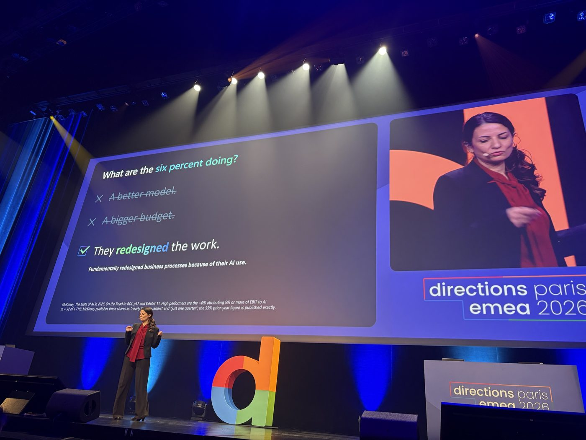
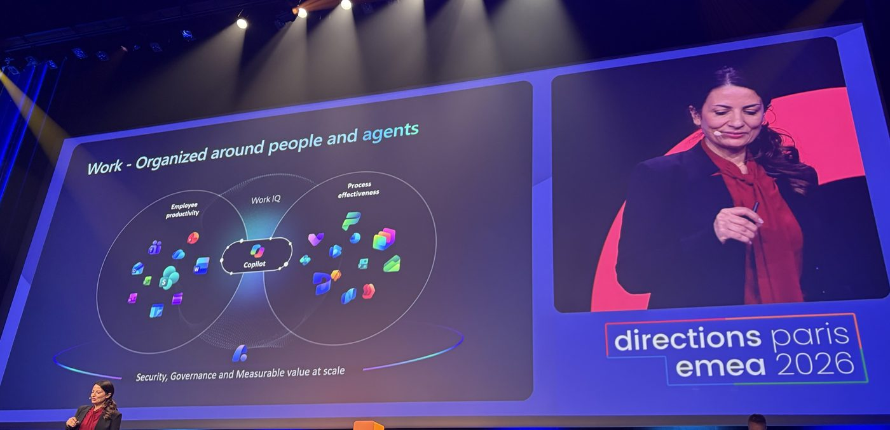
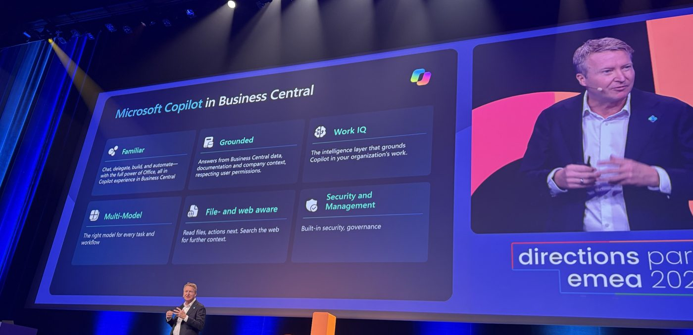
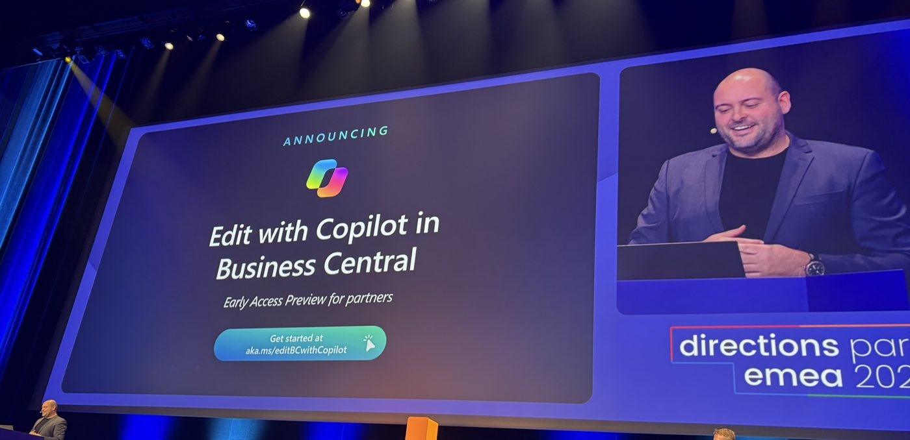
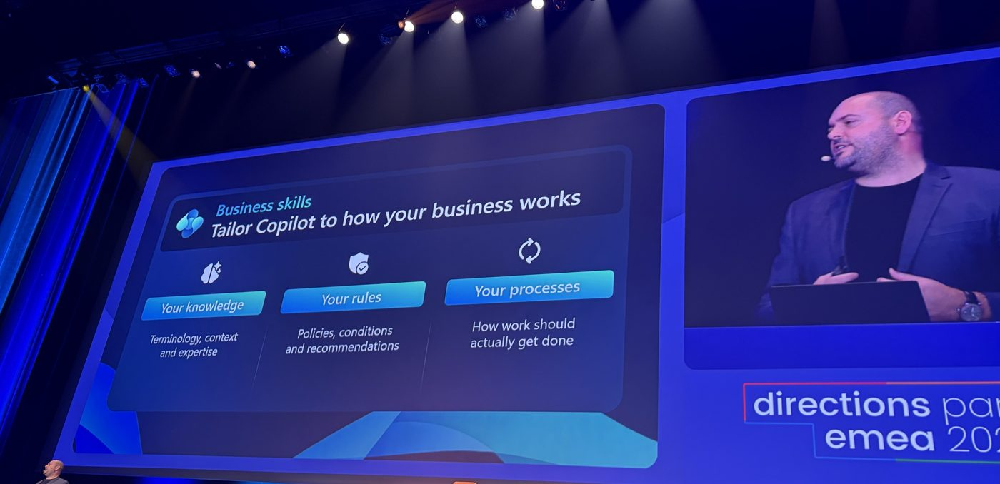
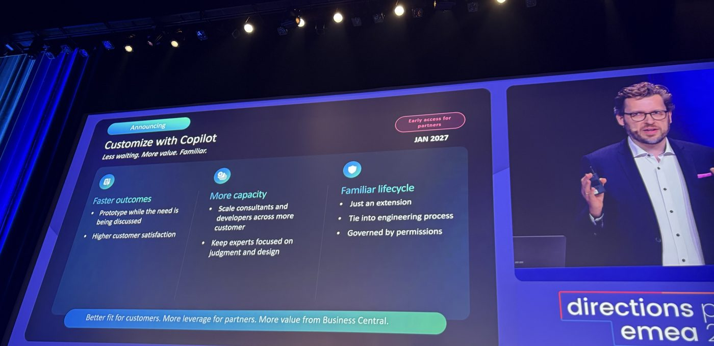
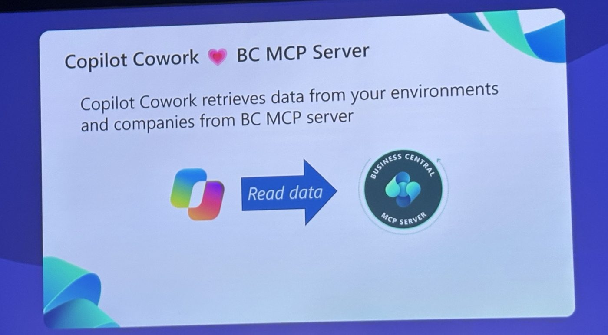
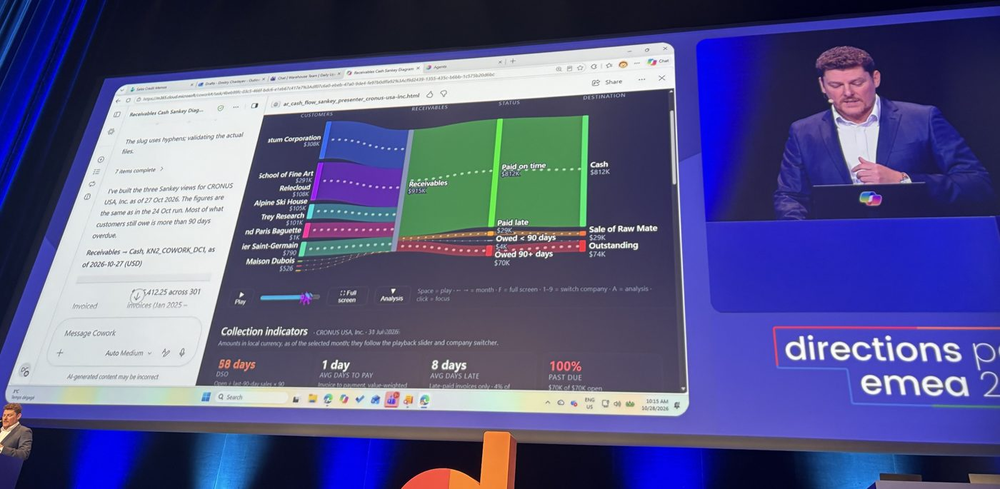

Directions EMEA 2026 Paris: Business Central Recap
At the end of October, I was in Paris for Directions EMEA 2026, where the keynote brought more announcements than could fit in a quick post. The main message was clear: Copilot is becoming a native layer of Business Central. Microsoft also showed how Copilot Cowork can connect to Business Central through an MCP server, introduced consumption-based AI pricing, and announced a licensing bundle with Microsoft 365 Copilot Business.
Here are the announcements that stood out to me, along with a few photos I took in the auditorium.
The essentials in six ideas
- Copilot is moving inside Business Central, with a new chat and Edit with Copilot for making changes in natural language.
- Copilot Cowork can use Business Central data through the Business Central MCP server.
- Agents and MCP usage are measured in Copilot Credits.
- A Business Central + Microsoft 365 Copilot Business bundle starts at a list price of $95 per user per month.
- Customize with Copilot can generate AL extensions from a requirement, with early access announced for January 2027.
- Organizations still on NAV or GP should pay attention to migration timelines and incentives.
The bigger picture: AI leaders are redesigning work
The keynote opened with a question on screen: “What is the 6% doing?” The slide, citing McKinsey, said that only 6% of companies attribute 5% or more of their EBIT to AI. The answer offered was that they have redesigned the work.

That idea connected the announcements that followed: work organized around people and agents, with Copilot and Work IQ connected to business applications, and security, governance and measurable value built in at scale.

A new Copilot, native to Business Central
Microsoft presented a new Copilot chat experience inside Business Central. The keynote described it as familiar—so users can chat, delegate and automate much as they do in Office—and grounded in Business Central data and documentation, while respecting permissions. It also brings Work IQ context, support for multiple models, awareness of files and the web, and integrated security and management.

Edit with Copilot: change data using natural language
This is one of the most tangible announcements for end users. Edit with Copilot in Business Central inherits the user's context, works with extensions and is ready to use without configuration. Copilot proposes changes, and the user reviews them before accepting.

Business Skills: teach Copilot how your company works
Business Skills are intended to adapt Copilot to the way your organization works. They bring together three ingredients: your knowledge (terminology, context and experience), your rules (policies, conditions and recommendations), and your processes (how work is actually done). The idea is to express these as natural-language narratives that people can read and understand.

Customize with Copilot: from requirement to extension
This is where the announcement could have the biggest impact for AL developers. Copilot can decide whether a requirement can be met through configuration, by reusing existing functionality or by building something new. It can generate an AL extension—including a table, pages and a field—then compile, publish and install it in a sandbox.
That could make it useful for prototyping while discussing a requirement with a customer. But a prototype is not production-ready software: review, testing and deployment still need to follow the engineering process. Early access was announced for January 2027.

Business Central in Copilot Cowork through MCP
This may be the announcement with the most room to grow. Microsoft described Copilot Cowork as one of the fastest-growing features in Frontier, used by more than half of Fortune 500 companies and among its highest-rated experiences. With the Business Central MCP server, Cowork can read data from your environments and companies.

The keynote also showed an example of creating a dashboard in Cowork using Business Central data. Connecting business data to a broader work experience creates new possibilities, while making permissions and governance especially important.

The Business Central + Microsoft 365 Copilot Business bundle
On the second day, Microsoft announced a bundle combining Business Central with Microsoft 365 Copilot Business:
- Business Central Essentials + Copilot Business: $95 per user per month at list price.
- Business Central Premium + Copilot Business: $125 per user per month at list price.
Euro prices were expected with the December 2026 price list, with purchasing available from January 1, 2027. See aka.ms/BC-Copilot-Bundle for more information.
What I would do next
- Review your NAV and GP customer base. The coming year is a good time to start migration conversations and understand the announced timelines and incentives.
- Prepare for the BC + Copilot bundle. Review how it could fit your offer ahead of its planned January 2027 availability.
- Sign up for early access. Keep an eye on Edit with Copilot, Business Skills and Customize with Copilot.
- Set a Copilot Credits budget. Define usage limits per agent before enabling consumption-based features.
- Test extensions on Business Central 29. The changes to the table-extension data model make it worth checking your solutions.
In future posts, I will take a closer look at these announcements as the early access programs open. For now, the main takeaway is that Copilot is becoming part of how people use and extend Business Central—and that adoption will require thoughtful design, governance and engineering, not just new features.